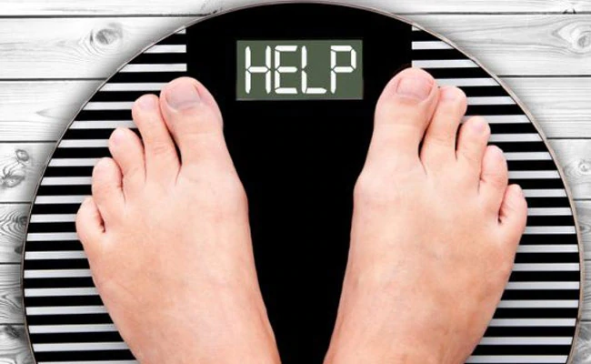
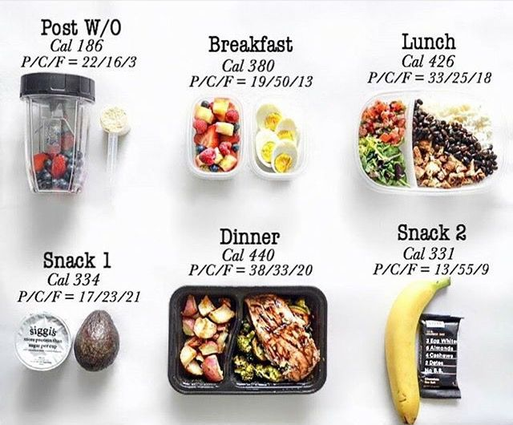
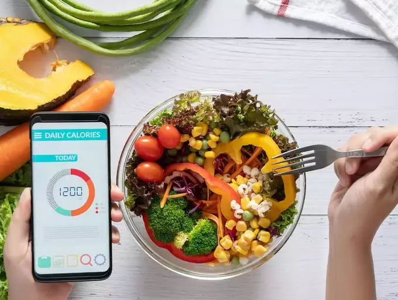

If you are someone trying to lose weight, but you are scared because you don't know anything about nutrition, there is no need to panic! Yes, you can lose lots of weight without knowing a single thing about nutrition!
When I started losing weight I had no idea what calories and macro nutrients are. The only step I took was quitting desserts, soda and bread. After 3 months I've already lost 25kg
Very small changes in your diet will make big differences when you are starting your weight loss journey. Weight loss isn't rocket science, it's a very simple process, you just need to be in a calorie deficit (eating fewer calories than you are burning), and that is all it takes.

In my opinion, the best food regime that you can stick to, in my opinion, is calorie counting. You can eat literally any food, and you have just one goal—to hit your calorie goal at the end of the day. Not any food items or food groups restrictions, whatever you like you can eat it.
For someone who is starting with Calorie counting, it should be easy and not complicated. Just focus on hitting your calorie target (it shouldn't be an exact number, give yourself a calorie range (for example, 2200-2400cals) and also try to get a decent amount of protein in your diet.
When you are into this for some time, you should start focusing on macro nutrients little more. Protein should be your main goal of the macro nutrients, try to get in 1.5-2g of Protein per lbs of body weight.
And for people that are longer time into this and have more experience, they should also be concerned about carbs and fat. You don't need to have an exact number of grams of fats/carbs, but try to have a balance. 50g of Fats per day is a minimum you should get. You can go higher than this of course, but don't overdo it, especially with saturated fats.
The main benefit of this "Diet" is that you can incorporate some so-called Junk Food. Even a whole meal in the day can be a 'junk food'. Try not do have more than 30% of your daily calories coming from that kind of meal.